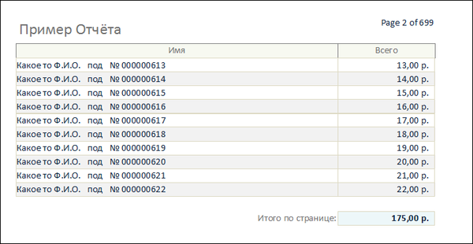

Private Sub PageHeaderSection_Format(Cancel As Integer, FormatCount As Integer)
'Событие форматирования Заголовка страницы (Верхний Колонтитул)
'--------------------------------------------------------------------
Me!fldPageSum = 0 'Поле "Итого по странице"
End Sub
Private Sub Detail_Print(Cancel As Integer, PrintCount As Integer)
'Событие печати блока деталей отчета
'--------------------------------------------------------------------
If PrintCount = 1 Then
'Последовательно прибавляем сумму в каждой строке к сумме по странице
Me!fldPageSum = Me!fldPageSum + Me!fldTotal
End If
End Sub
Может выглядеть примерно так:
